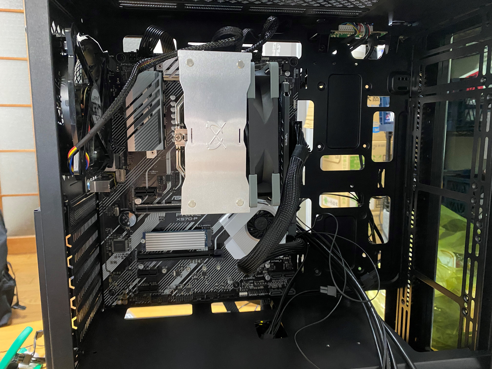

情報ネットワーク工学科 204234 戸井愛翔
最近の出来事
PC組み立てました！
今月の頭ゴロに初めて自作PCを組み立てました。様々なトラブルがあったりしたので説明出来たらなあと思い書かせていただきました。
まずは素材ですね。 こんな感じで細かな部分は除きますが、CPUはライゼン9、GPUはGeforceRTX3060ti他はまあそれなりのものを、全部で20万近くしましたね。よくバイト頑張ったよ。ウン
まずは、CPUをマザーボードにぶっ刺して、グリスをぬりぬり。クーラードーン。ここで一つ問題が起きたんですよ。
このクーラー、ファンと冷却部が別々なのですがくっつけるクリップみたいなのが非常に硬い！なんか自分のつけ方が悪いのか？と考えてみたんですが、特に悪いことがなかったんですね。なので力ずくできました。結果できたんですが、詰めが剥がれましたね。痛かった。そのあと、メモリをぶっ刺したりM.2をぶっ刺したりしてPCケースにはめたんですね。じゃーん
ここまで来たらあと少しですね。電源をぶっ刺したり、配線作業で苦労したりと大変でしたね一番ドキドキしたのは、GPUをぶっ刺すときですね。一番高かったので手がガクブルですよ。 ここまで来ました。起動してOSを入れればOK！ この画面が見れて一安心
これを閉じてUSBタイプでありましたのでUSBぶっ刺してダウンロードが始まりました！やったねもうそろそろダウンロードが終わるぞ！そう思っていた矢先こんな画面が....
な、なんだこの画面は…
そう…ブルーバックといわれるパソコン使っている人にとって地獄のような画面ですね、こっからですよ。初めてPCを組み立て、聞く友達もいなかったので対処方法がわかずめちゃくちゃ時間を食う羽目に。。。Twitterの博識に助けを求め結果「メモリが悪いんじゃない？」とすぐにメモリ引っこ抜き試してみるとあら不思議ダウンロードがすいすい進むじゃあないですか。
出来ました！
やっとできましたよ！PC！時間はですね。丸二日！OSインスト事件で1.5日、組み立てに0.5日くらいかかりましたね。疲れましたよ。達成感と疲労感が一気に出てきて、片づける前に寝てしまいましたね
全体図が泣かな取れない。。。。
まあ、まだ、テスト勉強やら課題やらで何もできていませんでしたが、テスト期間が終わったらゲームももちろん、本当の目的であったゲームを作ってみるってこともやっていきたいなと思っています。
以上！最近の出来事ないしPC組み立て日記？を終わります！